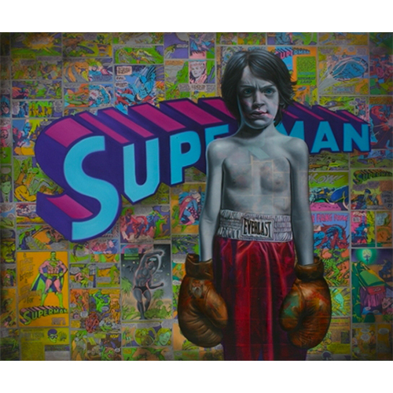

Exhibitions
Immortal Underground, Opera Gallery, New York, New York, US, November 12–December 2, 2009.
The ADAM and RON Show, Elms Lesters Painting Rooms, London, UK, May 4–31, 2008.
Literature
Ron English, Death and the Eternal Forever (Korero Press, 2014), p. 109. ISBN 978-0957664920.
Ron English, Original Grin: The Art of Ron English (Paris: Cernunnos, 2019), p. 297. ISBN 978-2374950938.
Ron English, Status Factory: The Art of Ron English (San Francisco: Last Gasp of San Francisco, 2014), p. 35. ISBN 978-0867197891.
Notes
In Original Grin, Death and the Eternal Forver, and Status Factory, this work was erroneously reported as 47x36 inches.